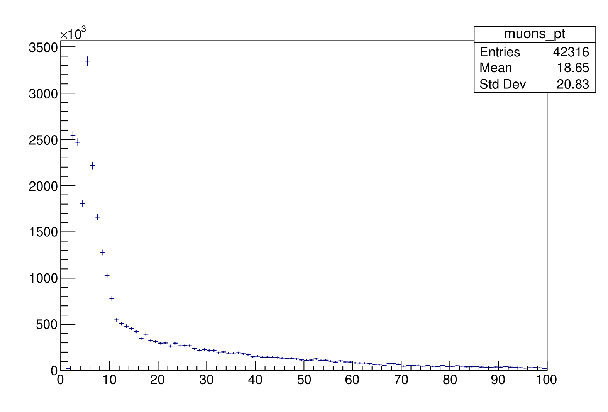
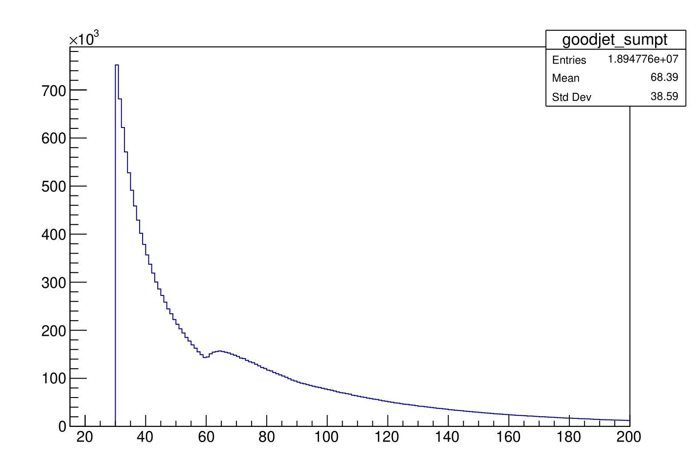

Examples
Hello World
#include "queryosity/json.h" #include "queryosity/hist.h" #include "queryosity.h" #include <fstream> #include <vector> #include <sstream> namespace qty = queryosity; using dataflow = qty::dataflow; namespace multithread = qty::multithread; namespace dataset = qty::dataset; namespace column = qty::column; namespace query = qty::query; using json = qty::json; using h1d = qty::hist::hist<double>; using linax = qty::hist::axis::linear; int main() { dataflow df( multithread::enable() ); std::ifstream data("data.json"); auto [x, w] = df.read( dataset::input<json>(data), dataset::columns<std::vector<double>, double>("x", "w") ); auto zero = df.define( column::constant(0) ); auto x0 = x[zero]; auto sel = df.weight(w).filter( column::expression([](std::vector<double> const& v){return v.size()}), x ); auto h_x0_w = df.make( query::plan<h1d>( linax(100,0.0,1.0) ) ).fill(x0).book(sel).result(); std::ostringstream os; os << *h_x0_w; std::cout << os.str() << std::endl; }
ggF HWW* (with systematic variations)
- Simulated ggF HWW events: ATLAS open data.
- ROOT extensions for queryosity: AnalysisPlugins
- Apply the MC event weight.
- Select entries for which there are exactly two opposite-sign leptons in the event.
- Form a (2, 2) matrix of cut regions:
- The leptons are same-/different-flavour.
- The dilepton invariant mass is less/greater than 60 GeV.
- In each case, plot the distribution of the dilepton+MET transverse momentum.
- Scale lepton tranvserse momenta by +/- 2% as systematic variations.
(To-do: update example to newer API).
dataflow df; auto tree_files = std::vector<std::string>{"hww.root"}; auto tree_name = "mini"; auto ds = df.load(dataset::input(tree_files, tree_name)); auto [mc_weight, el_sf, mu_sf] = ds.read( dataset::column<float>("mcWeight"), dataset::column<float>("scaleFactor_ELE"), dataset::column<float>("scaleFactor_MUON") ); auto [ lep_pt_MeV, lep_eta, lep_phi, lep_E_MeV, lep_Q, lep_type ] = ds.read( dataset::column<VecF>("lep_pt"), dataset::column<VecF>("lep_eta"), dataset::column<VecF>("lep_phi"), dataset::column<VecF>("lep_E"), dataset::column<VecF>("lep_E"), dataset::column<VecF>("lep_charge"), dataset::column<VecF>("lep_type") ); auto [met_MeV, met_phi] = ds.read( dataset::column<float>("met_et"), dataset::column<float>("met_phi") ); auto MeV = ana.constant(1000.0); auto lep_pt = lep_pt_MeV / MeV; auto lep_E = lep_pt_MeV / MeV; auto met = met_MeV / MeV; auto lep_eta_max = df.constant(2.4); auto lep_pt_sel = lep_pt[ lep_eta < lep_eta_max && lep_eta > (-lep_eta_max) ]; auto p4l1 = df.define<NthP4>(0)(lep_pt_sel, lep_eta_sel, lep_phi_sel, lep_E_sel); auto p4l2 = df.define<NthP4>(1)(lep_pt_sel, lep_eta_sel, lep_phi_sel, lep_E_sel); auto p4ll = p4l1+p4l2; using P4 = TLorentzVector; auto mll = df.define([](const P4& p4){return p4.M();})(p4ll); auto pth = df.define( [](const P4& p4, float q, float q_phi) { TVector2 p2; p2.SetMagPhi(p4.Pt(), p4.Phi()); TVector2 q2; q2.SetMagPhi(q, q_phi); return (p2+q2).Mod(); })(p4ll, met, met_phi); auto n_lep_sel = df.define([](VecF const& lep){return lep.size();},lep_pt_sel); auto n_lep_req = df.define(column::constant<unsigned int>(2)); auto cut_2l = df.weight(mc_weight * el_sf * mu_sf)\ .filter(n_lep_sel == n_lep_req); auto cut_2los = cut_2l.filter([](const VecI& lep_charge){return lep_charge.book(0)+lep_charge.book(1)==0;},lep_Q); auto cut_2ldf = cut_2los.filter([](const VecUI& lep_type){return lep_type.book(0)+lep_type.book(1)==24;},lep_type); auto cut_2lsf = cut_2los.filter([](const VecUI& lep_type){return (lep_type.book(0)+lep_type.book(1)==22)||(lep_type.book(0)+lep_type.book(1)==26);},lep_type); auto mll_cut = df.constant(60.0); auto cut_2ldf_sr = cut_2ldf.filter(mll < mll_cut); auto cut_2lsf_sr = cut_2lsf.filter(mll < mll_cut); auto cut_2ldf_wwcr = cut_2ldf.filter(mll > mll_cut); auto cut_2lsf_wwcr = cut_2lsf.filter(mll > mll_cut); auto pth_hist = df.get<Hist<1,float>>("pth",100,0,400).fill(pth).book(cut_2los); auto l1n2_pt_hists_wwcrs = l1n2_pt_hist.book(cut_2lsf_sr, cut_2lsf_wwcr); auto Escale = df.define([](VecD E){return E;}).vary("lp4_up",[](VecD E){return E*1.02;}).vary("lp4_dn",[](VecD E){return E*0.98;}); auto lep_pt_sel = Escale(lep_pt)[ lep_eta < lep_eta_max && lep_eta > (-lep_eta_max) ]; auto lep_E_sel = Escale(lep_E)[ lep_eta < lep_eta_max && lep_eta > (-lep_eta_max) ]; auto p4l1 = df.define<NthP4>(0)(lep_pt, lep_eta, lep_phi, lep_E); auto p4l2 = df.define<NthP4>(1)(lep_pt, lep_eta, lep_phi, lep_E); auto cut_2l = df.weight("weight")(mc_weight * el_sf * mu_sf)\ .filter("2l")(n_lep_sel == n_lep_req); auto mll_vars = df.get<Hist<1,float>>("mll",50,0,100).fill(mll).book(cut_2los); mll_vars.nominal()->Draw(); mll_vars["lp4_up"]->Draw("same");

DAOD_PHYS
- Note the manipulation of non-trivial data types (
xAOD::EventInfo,xAOD::MuonContainer) as columns!
#include "qhep/Event.h" #include "qhep/Hist.h" #include <xAODEventInfo/EventInfo.h> #include <xAODEgamma/ElectronContainer.h> using VecF = ROOT::RVec<float>; using VecD = ROOT::RVec<double>; #include "queryosity/queryosity.h" using dataflow = queryosity::dataflow; namespace multithread = queryosity::multithread; namespace dataset = queryosity::dataset; namespace column = queryosity::column; namespace query = queryosity::query; namespace systematic = queryosity::systematic; #include "TH1F.h" #include "TPad.h" #include "TCanvas.h" #include <ROOT/RVec.hxx> #include <chrono> #include <iostream> #include <memory> #include <sstream> std::vector<std::string> daodFiles{ "/project/6001378/thpark/public/mc23_13p6TeV.601189.PhPy8EG_AZNLO_Zee.deriv.DAOD_PHYS.e8514_s4162_r14622_p5855/DAOD_PHYS.35010014._000001.pool.root.1", "/project/6001378/thpark/public/mc23_13p6TeV.601189.PhPy8EG_AZNLO_Zee.deriv.DAOD_PHYS.e8514_s4162_r14622_p5855/DAOD_PHYS.35010014._000002.pool.root.1", "/project/6001378/thpark/public/mc23_13p6TeV.601189.PhPy8EG_AZNLO_Zee.deriv.DAOD_PHYS.e8514_s4162_r14622_p5855/DAOD_PHYS.35010014._000003.pool.root.1", "/project/6001378/thpark/public/mc23_13p6TeV.601189.PhPy8EG_AZNLO_Zee.deriv.DAOD_PHYS.e8514_s4162_r14622_p5855/DAOD_PHYS.35010014._000004.pool.root.1", "/project/6001378/thpark/public/mc23_13p6TeV.601189.PhPy8EG_AZNLO_Zee.deriv.DAOD_PHYS.e8514_s4162_r14622_p5855/DAOD_PHYS.35010014._000005.pool.root.1", "/project/6001378/thpark/public/mc23_13p6TeV.601189.PhPy8EG_AZNLO_Zee.deriv.DAOD_PHYS.e8514_s4162_r14622_p5855/DAOD_PHYS.35010014._000006.pool.root.1", "/project/6001378/thpark/public/mc23_13p6TeV.601189.PhPy8EG_AZNLO_Zee.deriv.DAOD_PHYS.e8514_s4162_r14622_p5855/DAOD_PHYS.35010014._000007.pool.root.1", "/project/6001378/thpark/public/mc23_13p6TeV.601189.PhPy8EG_AZNLO_Zee.deriv.DAOD_PHYS.e8514_s4162_r14622_p5855/DAOD_PHYS.35010014._000008.pool.root.1", "/project/6001378/thpark/public/mc23_13p6TeV.601189.PhPy8EG_AZNLO_Zee.deriv.DAOD_PHYS.e8514_s4162_r14622_p5855/DAOD_PHYS.35010014._000009.pool.root.1", "/project/6001378/thpark/public/mc23_13p6TeV.601189.PhPy8EG_AZNLO_Zee.deriv.DAOD_PHYS.e8514_s4162_r14622_p5855/DAOD_PHYS.35010014._000010.pool.root.1" }; std::string treeName = "CollectionTree"; float EventWeight(const xAOD::EventInfo &eventInfo) { return eventInfo.mcEventWeight(); } class ElectronSelection : public column::definition<ConstDataVector<xAOD::ElectronContainer>( xAOD::ElectronContainer)> { public: ElectronSelection(double pT_min, double eta_max) : m_pT_min(pT_min), m_eta_max(eta_max) {} virtual ~ElectronSelection() = default; virtual ConstDataVector<xAOD::ElectronContainer> evaluate( column::observable<xAOD::ElectronContainer> els) const override { ConstDataVector<xAOD::ElectronContainer> els_sel( SG::VIEW_ELEMENTS); for (const xAOD::Electron *el : *els) { if (el->pt() < m_pT_min) continue; if (TMath::Abs(el->eta()) > m_eta_max) continue; els_sel.push_back(el); } return els_sel; } protected: double m_pT_min; double m_eta_max; }; bool AtLeastTwoElectrons(ConstDataVector<xAOD::ElectronContainer> const &els) { return els.size() >= 2; } float DiElectronsMass(ConstDataVector<xAOD::ElectronContainer> const &els) { return (els[0]->p4() + els[1]->p4()).M(); }; void analyze(unsigned int n) { dataflow df(multithread::enable(n)); auto ds = df.load(dataset::input<Event>(daodFiles, treeName)); auto eventInfo = ds.read(dataset::column<xAOD::EventInfo>("EventInfo")); auto allElectrons = ds.read(dataset::column<xAOD::ElectronContainer>("Electrons")); auto selectedElectrons = df.define(column::definition<ElectronSelection>(10.0,1.5), allElectrons); auto diElectronsMassMeV = df.define(column::expression(DiElectronsMass), selectedElectrons); auto toGeV = df.define(column::constant(1.0 / 1000.0)); auto diElectronsMassGeV = diElectronsMassMeV * toGeV; auto eventWeight = df.define(column::expression(EventWeight), eventInfo); auto atLeastTwoSelectedElectrons = df.weight(eventWeight) .filter(column::expression(AtLeastTwoElectrons), selectedElectrons); auto selectedElectronsPtHist = df.make(query::plan<Hist<1,float>>("diElectronMass", 100, 0, 500)) .fill(diElectronsMassGeV) .book(atLeastTwoSelectedElectrons); selectedElectronsPtHist->Draw(); gPad->SetLogy(); gPad->Print("el_pts.pdf"); } int main(int argc, char *argv[]) { int nthreads = 0; if (argc==2) { nthreads=strtol(argv[1], nullptr, 0); } auto tic = std::chrono::steady_clock::now(); analyze(nthreads); auto toc = std::chrono::steady_clock::now(); std::chrono::duration<double> elapsed_seconds = toc-tic; std::cout << "elapsed time (" << nthreads << " threads) = " << elapsed_seconds.count() << "s" << std::endl; }

IRIS-HEP ADL benchmark
- Collision dataset: 2012 CMS open data (16 GiB, 53 million events).
- Task 7: plot the scalar sum in each event of the p T of jets with p T > 30 GeV that are not within 0.4 in ΔR of any light lepton with p T > 10 GeV.
#include <algorithm> #include <chrono> #include <cstdlib> #include <functional> #include "queryosity/queryosity.h" #include "TCanvas.h" #include <ROOT/RVec.hxx> #include "AnalysisPlugins/Hist.h" #include "AnalysisPlugins/Tree.h" template <typename T> using Vec = ROOT::RVec<T>; using VecUI = Vec<unsigned int>; using VecI = Vec<int>; using VecF = Vec<float>; using VecD = Vec<double>; using dataflow = queryosity::dataflow; namespace multithread = queryosity::multithread; namespace dataset = queryosity::dataset; namespace column = queryosity::column; namespace query = queryosity::query; namespace systematic = queryosity::systematic; class DRMinMaxSel : public column::definition<VecI(VecF, VecF, VecF, VecF, VecF)> { public: DRMinMaxSel(float minDR, float pt2Min) : m_minDR(minDR), m_pt2Min(pt2Min) {} virtual ~DRMinMaxSel() = default; virtual VecI evaluate(column::observable<VecF> eta1, column::observable<VecF> phi1, column::observable<VecF> pt2, column::observable<VecF> eta2, column::observable<VecF> phi2) const override { VecI mask(eta1->size(), 1); if (eta2->size() == 0) { return mask; } const auto ptcut = (*pt2) > m_pt2Min; const auto eta2_ptcut = (*eta2)[ptcut]; const auto phi2_ptcut = (*phi2)[ptcut]; if (eta2_ptcut.size() == 0) { return mask; } const auto c = ROOT::VecOps::Combinations(*eta1, eta2_ptcut); for (auto i = 0u; i < c[0].size(); i++) { const auto i1 = c[0][i]; const auto i2 = c[1][i]; const auto dr = ROOT::VecOps::DeltaR((*eta1)[i1], eta2_ptcut[i2], (*phi1)[i1], phi2_ptcut[i2]); if (dr < m_minDR) mask[i1] = 0; } return mask; } protected: const float m_minDR; const float m_pt2Min; }; void task(int n) { dataflow df(multithread::enable(n)); std::vector<std::string> tree_files{"Run2012B_SingleMu.root"}; std::string tree_name = "Events"; auto ds = df.load(dataset::input<Tree>(tree_files, tree_name)); auto n_jet = ds.read(dataset::column<unsigned int>("nJet")); auto jets_pt = ds.read(dataset::column<VecF>("Jet_pt")); auto jets_eta = ds.read(dataset::column<VecF>("Jet_eta")); auto jets_phi = ds.read(dataset::column<VecF>("Jet_phi")); auto jets_m = ds.read(dataset::column<VecF>("Jet_mass")); auto n_muon = ds.read(dataset::column<unsigned int>("nMuon")); auto mus_pt = ds.read(dataset::column<VecF>("Muon_pt")); auto mus_eta = ds.read(dataset::column<VecF>("Muon_eta")); auto mus_phi = ds.read(dataset::column<VecF>("Muon_phi")); auto n_elec = ds.read(dataset::column<unsigned int>("nElectron")); auto els_pt = ds.read(dataset::column<VecF>("Electron_pt")); auto els_eta = ds.read(dataset::column<VecF>("Electron_eta")); auto els_phi = ds.read(dataset::column<VecF>("Electron_phi")); auto jets_ptcut = df.define( column::expression([](VecF const &pts) { return pts > 30; }), jets_pt); auto jets_mudr = df.define(column::definition<DRMinMaxSel>(0.4, 10.0), jets_eta, jets_phi, mus_pt, mus_eta, mus_phi); auto jets_eldr = df.define(column::definition<DRMinMaxSel>(0.4, 10.0), jets_eta, jets_phi, els_pt, els_eta, els_phi); auto goodjet_mask = jets_ptcut && jets_mudr && jets_eldr; auto goodjet_sumpt = df.define( column::expression( [](VecI const &good, VecF const &pt) { return Sum(pt[good]); }), goodjet_mask, jets_pt); auto cut_1jet = df.filter( column::expression([](int njet) { return njet >= 1; }), n_jet); auto cut_goodjet = cut_1jet.filter(column::expression( [](VecI const &goodjet) { return Sum(goodjet); }), goodjet_mask); auto h_sumpt_goodjet = df.make(query::plan<Hist<1, float>>("goodjet_sumpt", 185, 15, 200)) .fill(goodjet_sumpt) .book(cut_goodjet); TCanvas c; h_sumpt_goodjet->Draw(); c.SaveAs("task_7.png"); } int main(int argc, char **argv) { int nthreads = 0; if (argc == 2) { nthreads = strtol(argv[1], nullptr, 0); } auto tic = std::chrono::steady_clock::now(); task(nthreads); auto toc = std::chrono::steady_clock::now(); std::chrono::duration<double> elapsed_seconds = toc - tic; std::cout << "used threads = " << nthreads << ", elapsed time = " << elapsed_seconds.count() << "s" << std::endl; }
